Shopify × Dreamlove Management Manual
Daily operations: orders, customers, marketing, reports, and more
Table of Contents
-
Home (dashboard)
The Home page of the admin shows, at a glance, your store status and shortcuts to common tasks. For in-depth performance, use Reports & Analytics and Live View.
1) What you’ll see on Home
- Quick summary of recent activity and alerts (e.g., orders to review or suggested tasks).
- Shortcuts to create discounts, campaigns, or review products (depending on installed apps and channels).
- Global search in the top bar to find orders, products, customers, apps, channels, or settings.
2) Metrics & analysis (Analytics → Reports & Analytics)
- Open Analytics → Reports & Analytics to see cards for sales, orders, visitors, conversion, and more.
- You can customize sections and cards: add, resize, reorder, or remove to focus on what matters.
- Dig deeper with Reports and filter/segment by date, channel, collection, customer, etc. Export if you need spreadsheets.
3) Live View (Analytics → Live View)
- Monitor real-time activity across channels: visitors, sessions, checkouts, and confirmed orders.
- Includes a 2D map/3D globe to view where activity comes from and key live metrics.
4) Productivity tips
- Slash shortcut: press / to open search and type “discounts”, “customers”, “shipping”…
- Saved views & filters in lists (Orders, Products, Customers): save views with filters/sorting for your routine.
- Live View during campaigns/peaks: confirm if visits progress to checkout or if there are drop-offs at a step.
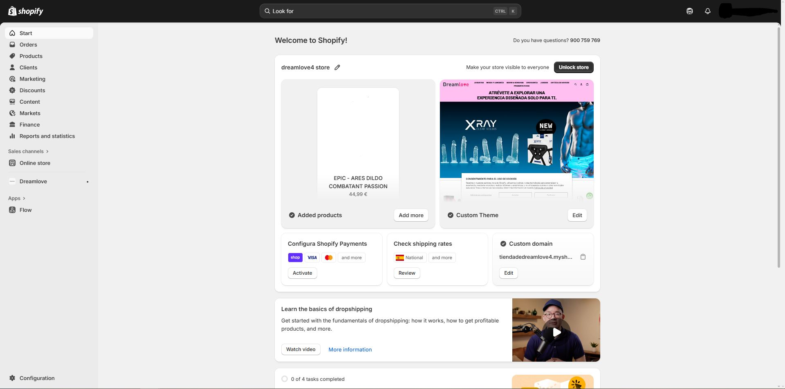
Home: access to metrics, search, and frequent tasks. For deeper analysis, use Reports and Live View. -
Orders
Manage the full cycle: list & filters, drafts, editing, charges/capture, fulfillment & tracking, cancellations, refunds, and returns/exchanges.
1) List, views & filters
- Go to Orders to see all orders. Create saved views with filters (status, payment, channel, tags, dates) and custom columns for your daily operations. General guide · Search & view orders.
2) Order statuses
- Understand order status, payment status (e.g., Authorized, Paid), and fulfillment status (Unfulfilled, Fulfilled, Partial), plus return status. Use them to prioritize and create views. Order statuses.
- On the order detail, check the timeline, tags, notes, payment history, and contact the customer. Manage order details.
3) Drafts (manual orders)
- Create a draft order with products, customer, discounts, and taxes; email an invoice or charge on the spot (depending on active methods). When paid, it becomes a regular order. Drafts & invoices · Create draft.
- Optional B2B: drafts for companies and payment (also Tap to Pay in app, depending on availability). Get paid for drafts.
4) Edit orders
- You can add or remove products, adjust quantities, edit shipping charges, and apply discounts (subject to limitations if items are already fulfilled). Edit orders · Edit products · Edit shipping · Considerations.
5) Charges: authorization & capture
- With automatic capture, Shopify charges on authorization. With manual capture, the payment is “Authorized” until you capture it (partial or full) before it expires. Authorization & capture.
6) Fulfillment & tracking
- On the order, mark as Fulfilled, set the carrier, and add tracking number(s); the customer will see the status and can track the shipment on the order status page. Add tracking · Order status page.
7) Cancellations & refunds
- Cancel stops processing (useful on customer request, unavailable stock, or suspected fraud). Decide whether to refund now or later and whether to restock. Cancel orders.
- Refund fully or partially (and optionally restock). Refund orders.
- New: you can refund to store credit when processing a return/exchange (check availability/country). Store credit on returns (news).
8) Returns & exchanges
- Create and manage returns; send instructions or a return label and add exchange items if needed. Returns & exchanges · Create and process returns.
- Define return rules (especially if you use POS) for eligibility and fees. Return rules.
9) Fraud prevention
- Review the fraud analysis and automate with Flow to flag/hold high-risk orders. Fraud analysis · Protect orders.

Orders: views & filters, drafts, editing, capture, fulfillment, and returns. -
Products
Create/edit, variants, inventory by location, collections, custom data, and channel publishing.
1) Create and edit products
- Products → Add product: title, description (rich text editor), media (images/video/3D), price and compare-at price, cost, taxes, weight/shipping, SKU, barcode, category and product type, vendor (brand), and tags. Products guide
- Status (draft/active/archived), schedule, and channel availability control where/when it’s published.
2) Variants and options
- Up to 3 options (e.g., Size/Color) and up to 100 variants per product. Each variant has its own price, SKU, barcode, cost, weight, image, and stock. Variants
3) Product media
- Upload images, add video and 3D models; the first item is the “featured” one. Use alt text for accessibility/SEO. Product media
4) Inventory and locations
- Enable Track quantity and manage stock by location (warehouses/stores). Adjustments, transfers, and partial fulfillment if needed. Locations · Inventory
5) Collections
- Automated (by rules: tags, type, price, availability) and Manual (curated). Sort by sales, date, price, or manual. Publish collections to the channels you want. Automated · Manual · Availability
6) Bulk editor and CSV
- Bulk editor: select products/variants and edit in a table (price, stock, tags, etc.). Bulk editing
- Import/Export CSV: use the official template; you can load images by URL. Product CSV
7) Custom data: Metafields and Metaobjects
- Extend the data model with metafields (e.g., materials, care, spec sheets) and metaobjects (reusable structures, e.g., “Size guide”). Metafields · Metaobjects
8) SEO and channels
- Edit Title/Meta description and URL (handle redirects if you change the handle). Alt text on images. SEO in Shopify
- Set availability for Online Store, Shop, Google & YouTube, etc. Sales channels
9) Shipping, duties, and taxes (per product)
- Weight for shipping rates, HS code and country of origin for cross-border duties; mark if the product requires shipping. Shipping rates · Taxes
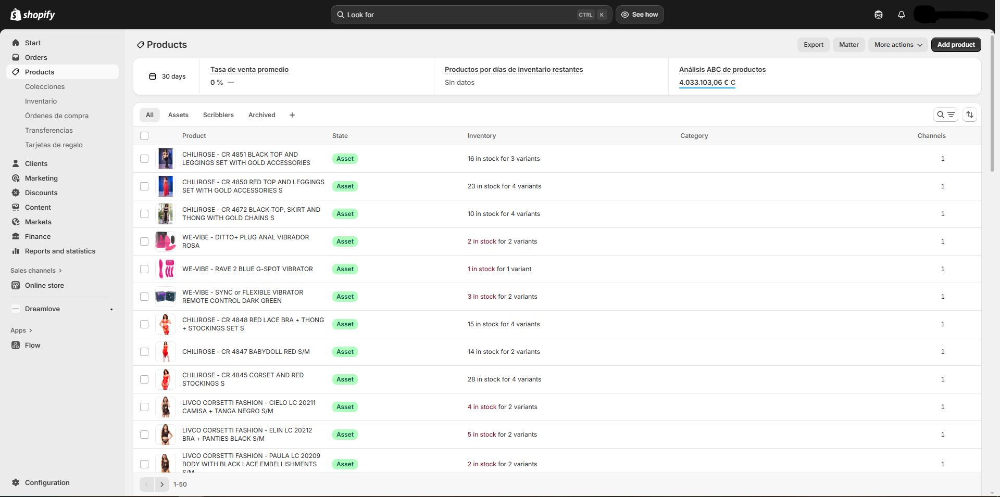
Products: variants, inventory, collections, and attributes. -
Customers
Manage profiles, segment your base, communicate with consent, and comply with privacy. From Customers you can see all profiles, create segments, import/export, and work with notes/tags.
1) List, views, and segments
- List and filters: search by name, email, tags, marketing status, spend, orders, date, etc. Save views for daily work. Customers in Shopify.
- Segments (dynamic by rules): build segments with the editor (ShopifyQL + filters) and reuse them for email, discounts, or automations. Segmentation · Create segments · Filter reference.
- Using segments: send campaigns or create targeted discounts from the segment itself. Manage segments.
2) Customer profiles: data, notes, and tags
- Open a profile to see contact data, addresses, spend, orders, marketing, and the timeline (history with internal notes, not visible to the customer). Timeline · Manage customers.
- Use tags to classify (VIP, risk, B2B…) and combine with segments/automations. Tags.
3) Import/Export customers (CSV)
- Export your list or import new signups/updates with the official CSV template. Import/Export customers · CSV in Shopify.
- Duplicates: if there are repeated emails/phones, Shopify skips records per its rules; review before importing.
4) Marketing and consent
- Manage email subscription status and apply double opt-in per your region. Subscriber list · Customer privacy · Collect contact info.
5) Privacy and data requests (GDPR, etc.)
- Process access/deletion requests from the profile: More actions → Erase personal data. Data requests · GDPR · Comply with GDPR.
6) Communication and interaction
- Send emails to individual customers from the admin or use Shopify Inbox for chat (you can share products and discounts). Email from admin · Inbox conversations.
7) Customer accounts (login)
- Enable the new customer accounts (passwordless login, B2B, etc.) at Settings → Customer accounts. Customer accounts.
8) B2B (optional)
- Migrate customers to B2B companies and manage blended stores (D2C + B2B) if applicable. Migrate customers to B2B · Blended store checklist.
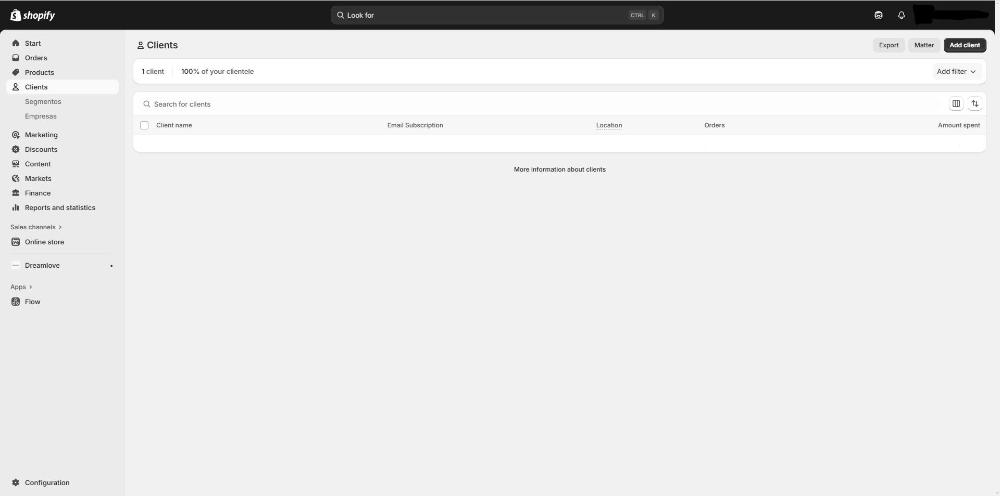
Customers: segments, data, notes/tags, marketing, and privacy. -
Marketing
From Marketing you create campaigns (multichannel) and automations (email/SMS/push), and review their performance. Set up marketing.
1) Campaigns (multichannel)
- Create a campaign and group activities (emails, social, ads). Shopify generates a full link with tracking, a short link, and a QR code to measure traffic and sales. Create campaigns · Campaigns features.
- Measure performance: summary, attributed sessions/sales, and “Top channel performance”. Marketing performance · Marketing reports.
2) Automations
- Templates for welcome, abandoned cart/checkout, winback, and post-purchase with Shopify Email or apps/Flow. Automations · Types.
- Abandoned checkout is now managed from Marketing (more control over sending, segmentation, and design). New abandoned checkout automation · Recover checkouts.
3) Shopify Email (newsletters and flows)
- Create and send emails from the admin with templates and your branding. Shopify Email · Templates.
- Pricing: 10,000 emails free/month; then charges apply (volume-based). Abandoned checkout automations don’t consume those credits. Pricing (EN) · Pricing (ES) · Accounting.
- Ensure deliverability: set sender email and authenticate domain (SPF/DKIM). Set up sender email.
- Capture subscribers with the theme’s newsletter block or apps. Newsletter form.
4) Ads and audiences
- Sync with apps/channels (Google & YouTube, Meta, etc.) and share event data for attribution. Marketing app data sharing.
- Shopify Audiences (eligibility required): build audience lists for ad platforms (US/Canada). Audiences (EN) · Set up · Use audiences.
5) Measurement and attribution
- Check the marketing summary and reports (sessions, conversion rate, attributed sales, performance by channel). Marketing performance · Marketing reports.
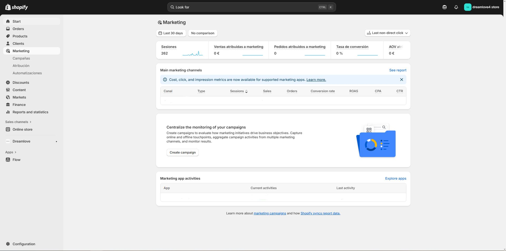
Marketing: multichannel campaigns, automated flows, and measurement. -
Discounts
Manage codes and automatic discounts, combine them per rules, schedule dates, and limit usage. Discounts apply to the subtotal before taxes; taxes are calculated afterward. General guide
1) Methods
- Discount codes: the customer enters a code at checkout. Useful for campaigns, influencers, or segments. Codes
- Automatic discounts: applied automatically when the cart meets conditions (amounts, quantities, collections…). Automatic
2) Most common types
- % or fixed amount on products/collections or order.
- Free shipping with threshold or conditions.
- Buy X, get Y (BOGO): by quantity or by spend; Y can be free or with %/amount off. Buy X get Y
- More types and considerations: Discount types
3) Rules and eligibility
- Conditions: specific products/collections, tags, minimum purchase, item quantity, first order, etc.
- Audience: all customers or specific segments (e.g., “VIP” or “No purchases in last 90 days”).
- Limits: start/end date and time, total usage cap, per-customer cap.
4) Discount combinations
- Enable combinations to allow one code to coexist with other discounts (e.g., free shipping + % off product), per allowed combinations. Combine discounts
- If multiple promotions are eligible, Shopify applies the best possible benefit per the active rules.
5) Checkout considerations
- Discounts created in the admin don’t apply on the post-purchase page. Codes · Automatic
- On Shopify POS there are specific rules/limitations for discount types and combinations.
6) Best practices
- Use clear names/codes and document conditions in the description.
- Schedule ahead (Black Friday, sales) and test the checkout flow before going live.
- Control cannibalization: limit per-customer usage and define compatibility with free shipping.
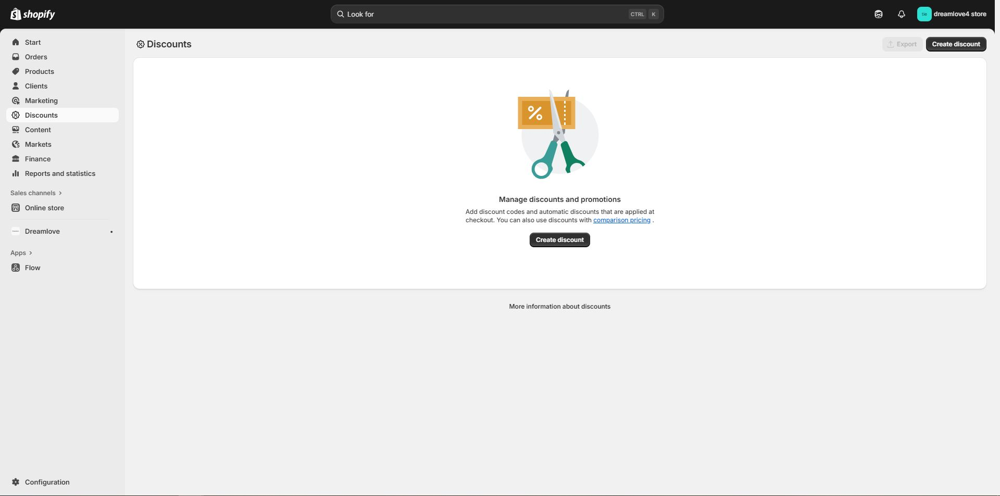
Discounts: codes, automatic, combination, and scheduling. -
Content
Manage pages, blogs, files (media), and navigation. Publish and schedule content, add SEO/ACCESSIBILITY, and organize via your menus.
1) Pages (Online Store → Pages)
- Create/edit pages like About us or Contact, control visibility (show/hide) and publishing schedule. Create and edit pages.
- Select a page template (depends on the theme) and complete Title/Description for SEO from the page settings.
2) Blogs and posts
- Create one or more blogs (e.g., “News”, “Guides”) and write posts with text, images, or video; publish now or schedule. Write posts · Manage posts.
- Optional: enable comments (theme-dependent) and set author, tags, and excerpt for SEO/UX.
3) Files (Content → Files)
- Upload images, PDFs, videos, or logos from Content → Files and reuse them across pages, products, themes, or metaobjects. Upload and manage files.
- You can upload up to 20 at a time; then copy the file URL to insert into your content.
4) Menus and navigation (Content → Navigation)
- Edit the Main menu and Footer menu; add links to products, collections, pages, posts, or external URLs. Menus & links · Default menus.
- The exact placement depends on the theme (adjust it in the theme editor).
5) Theme and sections (Online Store → Themes → Customize)
- Customize design with the theme editor (colors, typography, sections and blocks); change homepage content and other theme templates. Theme editor.
- With Online Store 2.0 you can have sections on almost any page (JSON templates) and connect dynamic sources (metafields/metaobjects) to blocks. OS 2.0 (sections & dynamic sources).
- If you prefer, start with our recommended templates.
6) Content SEO and accessibility
- Edit title, meta description, and URL on pages/posts; add alt text to images for SEO/ACCESSIBILITY. SEO in Shopify (help).
- A good starting point: Shopify’s blog practical guide (updated). SEO: how to generate more traffic.
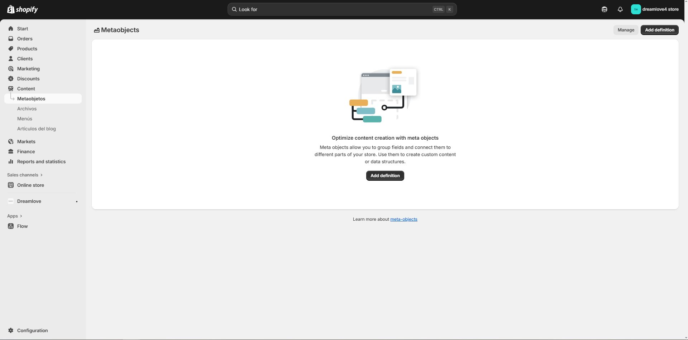
Site content: pages, posts, files, and navigation. Adjust the design from the theme editor. -
Markets
Centralize international selling by markets (countries/regions or customer groups) and customize catalog, domains/URLs, language, currency, and pricing per market.
1) Create and organize markets
- Go to Settings → Markets. Create markets and, if needed, sub-markets that inherit settings from the main one (catalog, currency, theme, etc.). What is Markets · Create and manage markets.
- You can preview a market experience (and associated languages) from the admin. Preview markets.
2) Domains and URL structure
- Assign each market a localized domain or subfolder (recommended for simplicity and SEO). International domains · Unique URLs per market.
- Example:
/es/for Spain,/fr/for France, or subdomains likefr.yourstore.com. Guide (ES).
3) Languages and translations
- Enable languages per market and translate with the official Translate & Adapt app (auto-translation for 2 languages free and side-by-side editor). How to use Translate & Adapt · App in App Store.
- Review limitations of supported content/languages. Limitations.
4) Currencies and pricing per market
- Set the market currency and enable local currencies when the market includes several countries; you can use automatic exchange rates or set manual rates. Set up local currencies (ES) · Local currency pricing.
- Shipping rates can be shown in local currency if the zone is a single country (or several sharing the same currency). Shipping in local currency.
5) Catalog and theme per market
- Restrict/allow products per market and adjust the visible catalog when needed (B2C/B2B, compliance, brands). Per-market customizations.
- Customize the theme per market (section copies, specific texts and images) from the editor with the “Market” selector. Theme overrides per market · How they work.
6) Duties and import taxes
- You can calculate and charge duties/taxes at checkout (avoid COD surprises). Review requirements and Incoterms (DDP recommended for total price). Charge duties at checkout · Duties & import taxes (ES).
- Optional: Managed Markets simplifies cross-border (payments, taxes, logistics, and localization). Overview · Set up.
7) Best practices
- Use subfolders for markets for simplicity and SEO benefits; enable correct language, currency, and catalog. International domains.
- Test each market (checkout, pricing, shipping, translations) with the market preview before going live. Manage/preview markets.
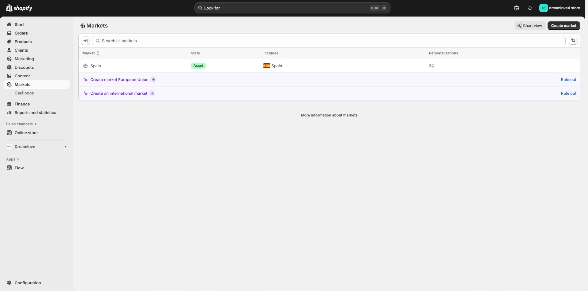
Markets: languages, currencies, catalog, and localized prices by country/region. -
Finances
Control Shopify billing (plans, apps, charges), payouts received, and financial reports for reconciliation.
1) Shopify billing (Settings → Billing)
- View/Export invoices (upcoming and past) and Charge status (last 90 days). Viewing your bills · View or export bills.
- Billing cycles and thresholds (why a bill may be brought forward). Cycles and thresholds (ES).
- App charges: subscriptions, usage, proration, and plan changes. App charges (ES).
- General page to manage bills. Managing your bills.
2) Payouts received (Shopify Payments → Payouts)
- View/Export payouts, payout schedule, and fees. Payouts (ES) · Payouts (EN).
- Resolve missing or lower payouts and understand delays. Lower/missing payouts (ES) · Payout delays (EN).
- If you use another provider, review how and when you get paid. Get paid (ES).
3) Reports and reconciliation
- Analytics → Reports → Finances category (Financial summary, Taxes, Sales vs Payments, etc.). Finance reports (ES) · Report types (EN).
- Suggested reconciliation: export payout CSV and cross-check with captured orders (dates, fees, refunds, and net).
4) Subscriptions and charges
- Review your paid subscriptions (plan and apps) in Billing. Charges (EN) · Billing FAQ.
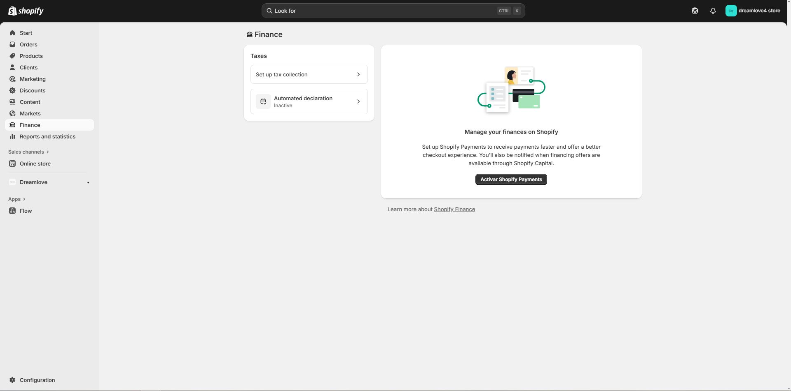
Finances: billing, payouts received, and reconciliation. -
Reports and Statistics
Analyze sales, customers, marketing, and inventory (availability of some reports depends on your plan).
1) Overview dashboard
- Analytics → Overview: key cards and charts (sales, AOV, sessions, conversion, channels). You can customize sections and metrics. Set up the Overview
2) Live View (real time)
- Map/globe with sessions, carts, checkouts, and purchases “live”. Live View
3) Default reports
- Categories: Acquisition, Behavior, Customers, Finances, Inventory, Marketing, Orders, Sales, etc. Default reports
4) Exporting and saving
- Export reports to CSV, XML, JSONL or Parquet (for PDF, print / “Save as PDF”). Export reports
5) Cohorts and funnels
- Customer cohort: retention and repeat purchases by first order month. Customer cohort analysis
- Conversion summary (per order) and order analytics: Conversion summary · Order analytics
6) Custom reports and advanced analysis
- Analytics → Reports: tweak columns, filters, and save views. Reports
- ShopifyQL Notebooks: queries and visualizations with ShopifyQL. ShopifyQL Notebooks
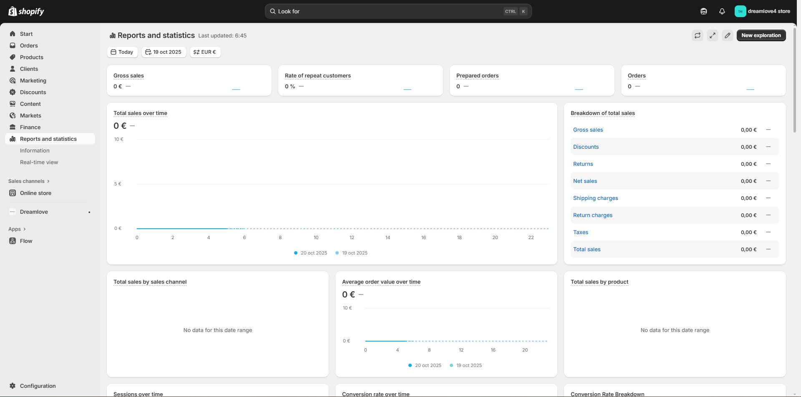
Reports and analytics by area. -
Sales Channels
Connect platforms (Shop, Google & YouTube, Facebook & Instagram, marketplaces, etc.) to sell beyond your online store and manage everything from Shopify (products, orders, customers). What sales channels are.
1) Add / manage channels
- Go to Settings → Apps and sales channels → Visit Shopify App Store → search the channel → Add channel. Guide: Manage sales channels.
- When you add a channel, your “active” products are available there by default; you can adjust channel availability from each product/collection. Guides: Channel availability · Collections availability.
- Each channel shows its performance dashboard (sales and traffic) on the admin home page: View dashboards by channel.
2) Main channels
- Shop (Shop app): add the channel and customize your Shop storefront (assets, collections, URL, banner). Set up Shop · Customize your Shop store · Products and collections in Shop.
- Google & YouTube: install the channel, connect Google Merchant Center, sync products and resolve disapprovals. Google & YouTube channel · Getting started.
- Facebook & Instagram by Meta: set up the unified catalog for Facebook Shop, Instagram Shopping, and campaigns. Overview · Setup.
- Marketplaces (Amazon, eBay, Walmart, Target Plus) via Shopify Marketplace Connect: Guide · Set up · Publish/manage products · Manage orders · App on Shopify App Store.
3) Best practices
- Review policies and requirements for each channel (mandatory attributes, categories, SLAs, etc.). Management and requirements by channel.
- Check the list of supported channels and choose the ones that fit your strategy: Available channels.
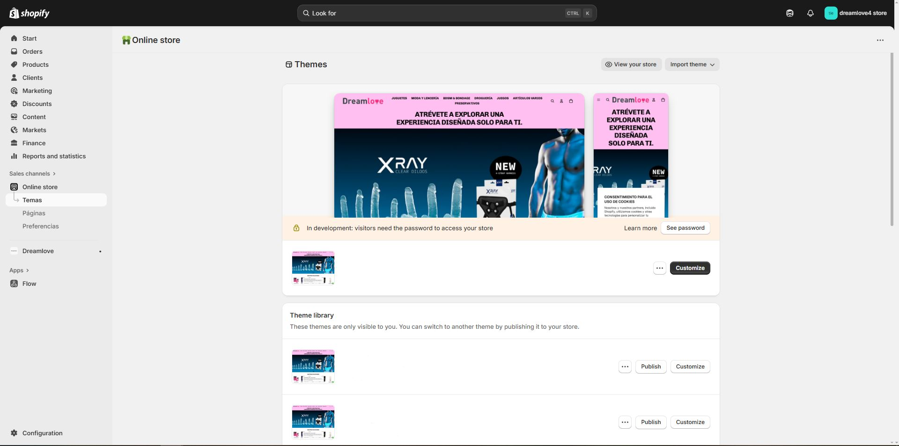
Channels: catalog, metrics, and requirements. -
Apps
Installation, permissions, and app blocks (Online Store 2.0). Review performance and clean up periodically.
1) Install apps
- Shopify App Store: find the app → Install → authorize permissions. Install apps.
- External link (direct install from the provider). Install via link.
- Custom apps: Settings → Apps and sales channels → Develop apps → enable development → create and install selecting scopes (API permissions). Custom apps.
2) Manage apps and channels
- Settings → Apps and sales channels: open, pin, search, and manage. Manage apps.
3) Permissions and privacy
- The install screen shows the requested permissions. Review the developer’s privacy policy and how they handle personal data. App permissions & personal data.
4) App blocks and app embeds (OS 2.0)
- Many apps add app blocks (sections/blocks you can place anywhere) or app embeds (elements toggled from the theme editor). Extend your theme with apps · Theme editor.
- For advanced behavior (developers): theme app extensions. Configure theme app extensions (Dev).
5) Checkout apps
- Settings → Checkout → Customize → configure checkout apps (blocking, express payments, etc.). Checkout apps.
6) Uninstall and clean up
- Uninstall from Settings → Apps and sales channels. Uninstall apps.
- If the app used app blocks/embeds, uninstalling usually removes them from the theme; if leftovers remain, check the theme editor or contact the developer. Manage app blocks/embeds.
7) App billing
- Subscriptions, usage, proration, and app billing cycles (they may differ from your plan’s cycle). App charges · Charges on your bills.
8) Support
- For third-party app assistance, use Get support on the app’s page or contact the developer from its App Store listing. Get help with apps.
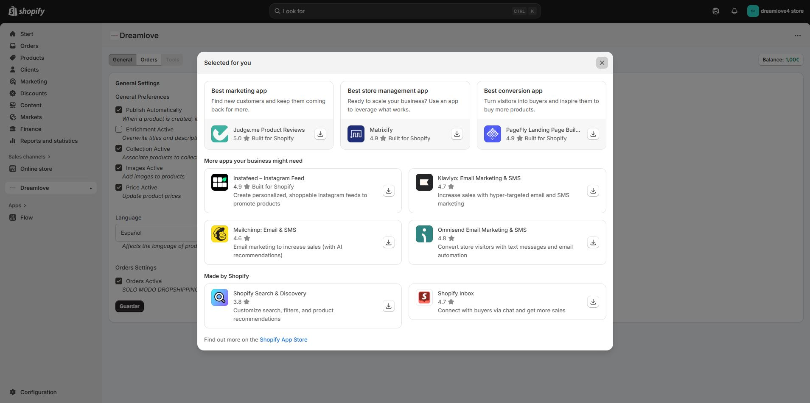
Apps: installation, permissions, and theme blocks. -
Settings
To learn all Shopify settings in detail (domain, payments, shipping, etc.), check our Configuration Manual.
-
Contact and Technical Support
To dive deeper into Shopify topics, refer to the relevant documentation and associated learning resources.